Historical and reference coats of arms


Budapest
Guide. Places in this edition: 33.
OTIUM is the practice of deliberate leisure. In the classical sense, otium is not escape from work but time when attention returns to memory, landscape, and thought — without a utilitarian deadline.
We shape routes for lingering, not for checklist tourism. The goal is presence in a place rather than consumption of sights.
OTIUM is not a tour operator. It is an invitation to walk, pause, and leave a route unfinished if the light on a façade deserves another minute.
Historical and reference coats of arms
Guide. Places in this edition: 33.

Al-Huda Mosque Manila is a places of worship in Budapest. Photo tags: river, city, budapest, hungary. Reference image context: https://pixabay.com/photos/river-city-budapest-hungary-9010602/.
Public photo archives associate this site with: river, city, budapest, hungary. Worth a stop when exploring Budapest.

Grand boulevard lined with mansions, embassies, Opera, and House of Terror museum—UNESCO buffer around the Millennium Metro below. Metro M1 is continental Europe’s oldest underground line (1896). Cafés on side streets offer quieter breaks than the main road.
Laid out from 1872 as a representative axis for the growing capital. Defines Pest’s elegant 19th-century urban fabric.

Step back in time to ancient Rome at the Aquincum Museum, where artifacts and ruins bring to life the Roman province of Pannonia. Established as a Roman military base around 89 AD. Ruins include the largest Roman bath complex north of the Alps. The site is located near the former Roman capital of Pannonia. Excavations began in the late 19th century. Houses statues, mosaics, and sculptures from the Roman era.
Founded in the 1st century AD, Aquincum was a thriving Roman military camp and settlement on the banks of the Danube River. Today's museum preserves remains of baths, temples, and amphitheaters, offering visitors a glimpse into daily life during the Roman Empire. Visit Aquincum Museum to explore the rich history of Budapest’s Roman past and understand how it shaped modern Hungary.
Royal palace complex housing the Hungarian National Gallery, the Budapest History Museum, and National Széchényi Library. Funicular from Clark Ádám Square saves the steep climb. Courtyards and terraces give wide Pest-side panoramas.
Royal seat from the 13th century onward; repeatedly destroyed and rebuilt—today’s shell largely mid–20th century. UNESCO-listed Buda Castle Quarter core with ramparts, churches, and cobbled streets.

Climb aboard the Buda Castle Funicular for a scenic journey up to one of Budapest's most iconic landmarks—Buda Palace. This charming cable car ride offers breathtaking views of the Danube River and the historic Pest district below. Operates daily from early morning until late evening. The funicular runs approximately every 10 minutes during peak hours. It is the oldest operating funicular railway in Hungary. The journey takes just three minutes but feels like a mini-adventure. Offers wheelchair accessibility.
Built in 1900, the funicular was originally designed by Hungarian engineer Ármin Vámbéry as a means to connect the royal palace on Castle Hill with the rest of the city. Over the years, it has become a beloved local attraction and a symbol of Budapest’s unique charm. Experience the panoramic vistas of the capital city while enjoying a leisurely ride through the heart of Buda’s hilltop neighborhood.
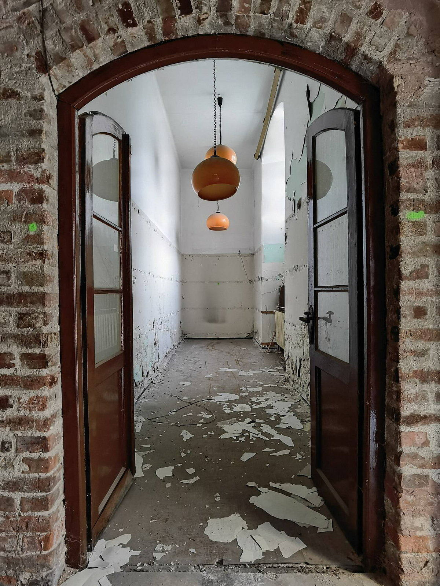
Perched high above Budapest on a hilltop overlooking the Danube River, Citadella is one of the city's most iconic landmarks and a testament to its rich military heritage. Completed in 1856 after five years of construction work. Designed by Italian architect Carlo Marcellino and built under Austrian rule. Features four towers with distinctive architectural styles reflecting different periods of design evolution. Today houses museums, cafes, and restaurants providing entertainment for locals and tourists alike. Offers unparalleled views of Buda Castle, Chain Bridge, and Pest district.
Built between 1851 and 1856, the Citadella was originally constructed as a fortress designed to defend the capital against potential threats. It served as both a military stronghold and a strategic observation point during Hungary's turbulent years following the Napoleonic Wars. Today, it stands as a symbol of resilience and a popular tourist attraction offering panoramic views of the city below. Visiting Citadella allows visitors to experience breathtaking vistas while learning about the historical significance of this impressive structure.
Moorish Revival synagogue—largest in Europe by seating—with museum and cemetery garden in the block. The Raoul Wallenberg Holocaust Memorial Park adjoins the site. Guided visits explain the organ and women’s gallery.
Built 1854–1859; the ghetto wall during the siege of Budapest ran partly through the complex. Centre of Neolog Judaism in Hungary and a key site on Jewish heritage walks.
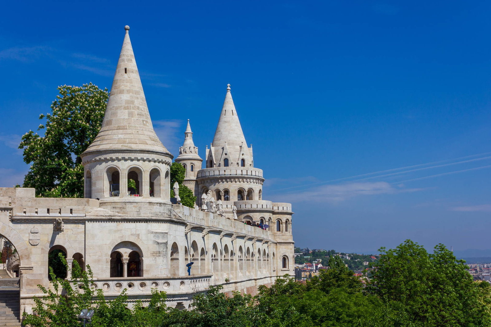
Fairytale terraces and turrets above the Danube with views toward Parliament—built as a lookout, not a fortress. Named after the fishermen’s guild once tasked with defending this stretch of wall. Seven towers evoke the seven Magyar chieftains of legend.
Completed around 1902 to designs by Frigyes Schulek near Matthias Church; partly fee-charging for upper terraces. Romantic panorama point and wedding-photo favourite above the river bend.

The Four Seasons Gresham Palace is a historic hotel nestled within Budapest's elegant Andrássy Avenue, once known as the 'Champs-Elysees of Hungary.' Built in 1911, it was originally constructed as a luxurious palace hotel by the renowned architect Ödön Lechner. Opened in 1911 as a luxury hotel for wealthy travelers. Designed by Hungarian architect Ödön Lechner in the Art Nouveau style. Listed as a cultural heritage site in 1964. Located on Andrássy Avenue, a UNESCO World Heritage Site. Offers panoramic views of the city and the Danube.
Completed in 1911, the Gresham Palace served as one of the most opulent hotels in Europe during its time. Designed in the Art Nouveau style, it showcased exquisite interior decorations and modern amenities for its era. The building has been listed as a cultural heritage site since 1964 and remains a symbol of Budapest’s architectural grandeur. Visitors come to experience the elegance and historical charm of this iconic hotel, which offers breathtaking views of the Danube River and serves as a reminder of Budapest's rich past.
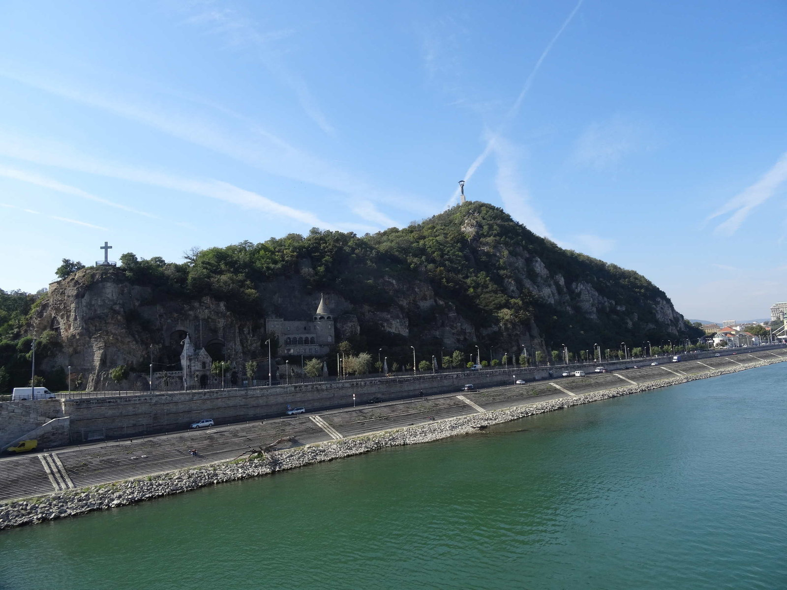
Limestone hill above the Danube: Citadel, Liberty Statue, and lookout paths over bridges and rooftops. The Cave Church is carved into the hillside near the base. Wear sturdy shoes; some paths are steep and exposed.
Fortifications from the 19th century; the giant female Liberty figure dates to Soviet-era commemoration, reinterpreted today. Classic sunset viewpoint and a geological backdrop to the Gellért Baths below.
Iron-framed hall with a colourful Zsolnay roof: paprika, lángos, and souvenirs on the ground, more food upstairs. Try the gallery level for simple Hungarian dishes. Liberty Bridge is steps away for a riverside walk.
Opened in 1897; designed by Samu Pecz as a modern wholesale market near the river and tram termini. Working market and tourist ritual in one noisy, fragrant building.
Monumental square with the Millennium Memorial, colonnades of historic figures, and two major art museums on either side. The Museum of Fine Arts and the Hall of Art frame the square. Ice skating and the zoo lie deeper in the park behind.
Laid out for Hungary’s 1896 millennium celebrations; later adapted as a site for mass gatherings and national holidays. Hungarian history in stone—mythic chieftains, kings, and independence themes in one vista.
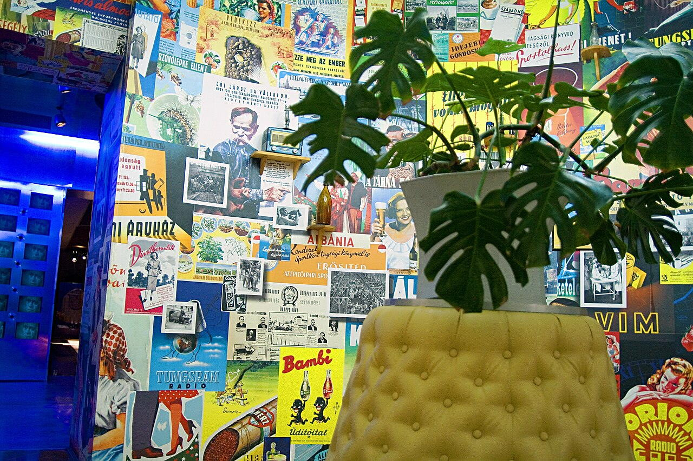
The House of Terror Museum is Budapest's chilling reminder of the dark chapters of Hungary's recent past. Located in a former Gestapo headquarters and Nazi prison, it tells the story of repression, resistance, and survival during World War II. It houses exhibits documenting both Nazi and Communist atrocities. Visitors can explore the original cells and interrogation rooms used by the occupying forces. Interactive displays provide context through multimedia and artifacts. Guided tours are available in multiple languages. The museum has won several awards for its innovative approach to historical storytelling.
Built in the early 20th century as the headquarters for the Hungarian secret police, the building later became the dreaded Gestapo HQ under Nazi occupation. After the war, it served as a prison until its closure in 1989. The museum opened in 2002 to commemorate the victims of totalitarian regimes. This museum offers a harrowing yet essential look into Hungary’s struggle against fascism and oppression.
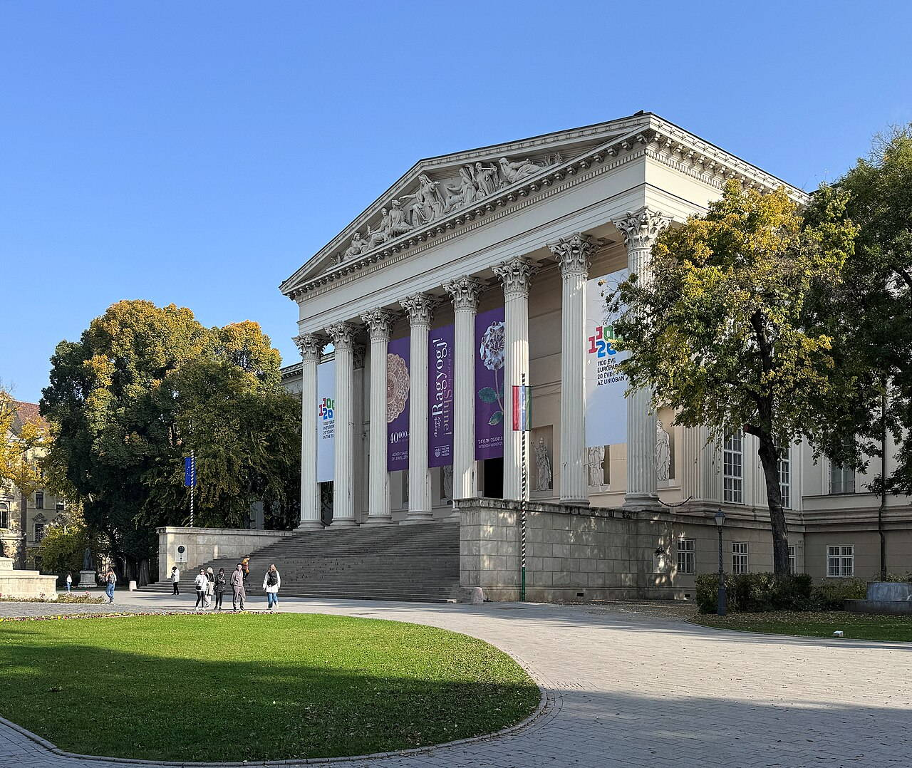
The Hungarian National Museum is Budapest's premier cultural institution, showcasing the nation's rich historical and artistic heritage. It houses over 4 million items in its collection, including archaeological finds, paintings, sculptures, and manuscripts. Notable exhibits include ancient Roman relics, medieval religious artifacts, and works by famous Hungarian artists such as Munkácsy and Klimt. The museum underwent major renovations in the early 2000s, enhancing accessibility and modernizing its facilities. Its architecture reflects various styles, blending neoclassical elements with contemporary design. Located on Vörösmarty Square, it offers panoramic views of the Danube River.
Established in 1808 as the Royal Hungarian Academy of Sciences, it later evolved into a museum dedicated to Hungary's culture and history. Over time, its collections expanded significantly, becoming one of Europe’s most comprehensive repositories of Hungarian art and artifacts. Visitors come here to explore Hungary's history, art, and culture through its extensive exhibits and collections.
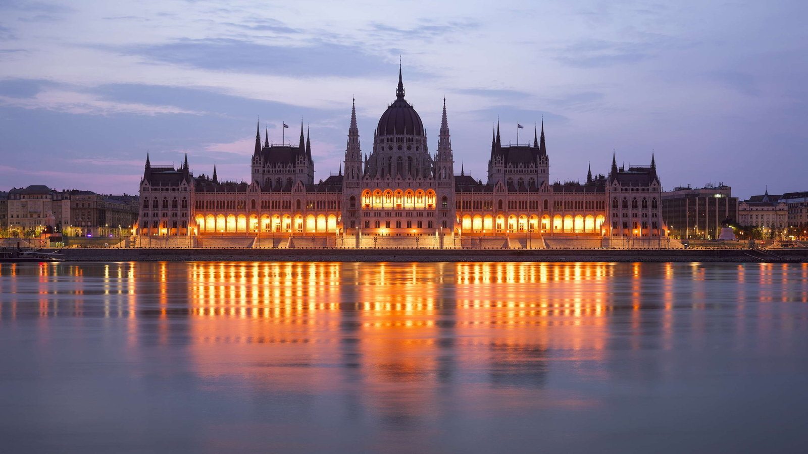
Neo-Gothic riverside parliament with a tall central dome and long symmetrical wings—Hungary’s largest building and a postcard symbol of Budapest. Guided visits cover the dome hall and ceremonial stairs when sessions allow. The building faces the Danube across from Buda Castle and the Chain Bridge.
Built from the late 19th century after the 1867 Compromise; designed by Imre Steindl. Heavily damaged in World War II and restored in stages. Seat of the National Assembly and a national emblem of Hungarian statehood.
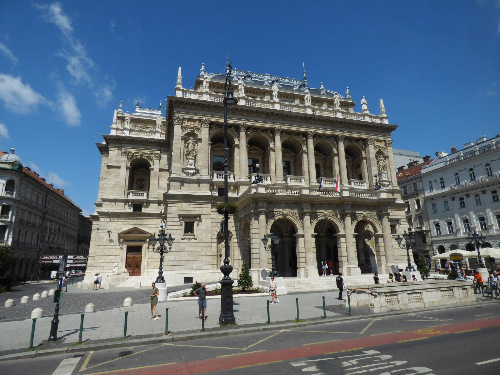
Renaissance Revival opera house with rich auditorium gilding—home to opera and ballet after a major recent restoration. Guided tours run when rehearsals allow. The avenue is lined with cafés toward Heroes’ Square.
Opened in 1884 to Miklós Ybl’s design; acoustics were praised from the first season. One of Europe’s great lyric theatres and a UNESCO-listed stretch of Andrássy Avenue.
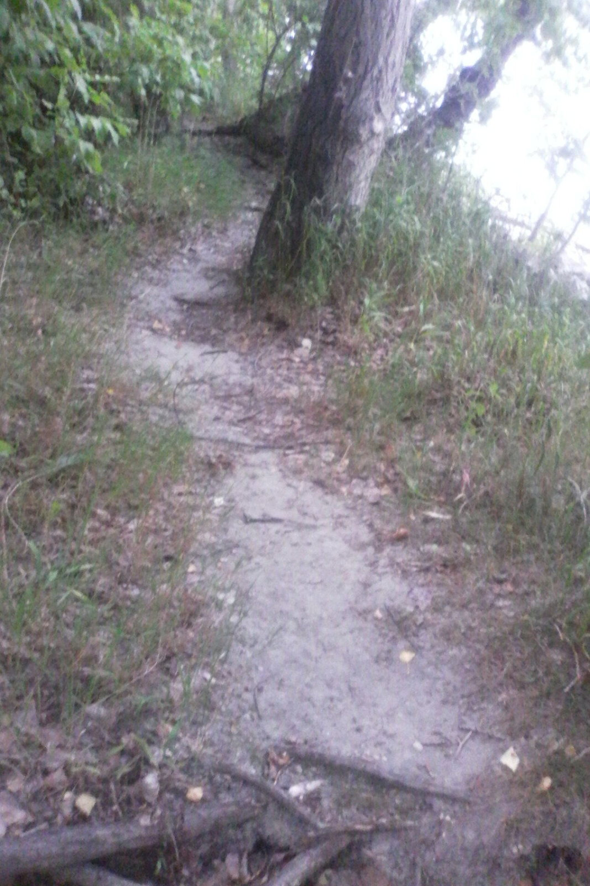
Situated on the Buda side of the Danube River, Kopaszi-gát is a charming park offering panoramic views of the river and the Pest shoreline. The park's lush greenery provides a peaceful escape from the bustling city center. Established in the late 1800s during the era of Hungarian industrialization and modernization. Features a mix of formal gardens and natural woodland areas. Offers walking trails that lead to various points along the riverside. Adjacent to several historical landmarks including Castle Hill and the Royal Palace. A favorite spot for romantic strolls and photography.
Originally opened in the late 19th century as part of the city's urban development plan, Kopaszi-gát was designed to connect Buda with Pest across the river. Over time, it has become a popular destination for locals and tourists alike, known for its scenic walks and tranquil atmosphere. Visit Kopaszi-gát to enjoy breathtaking vistas of the Danube and experience the serene beauty of Budapest’s green spaces.
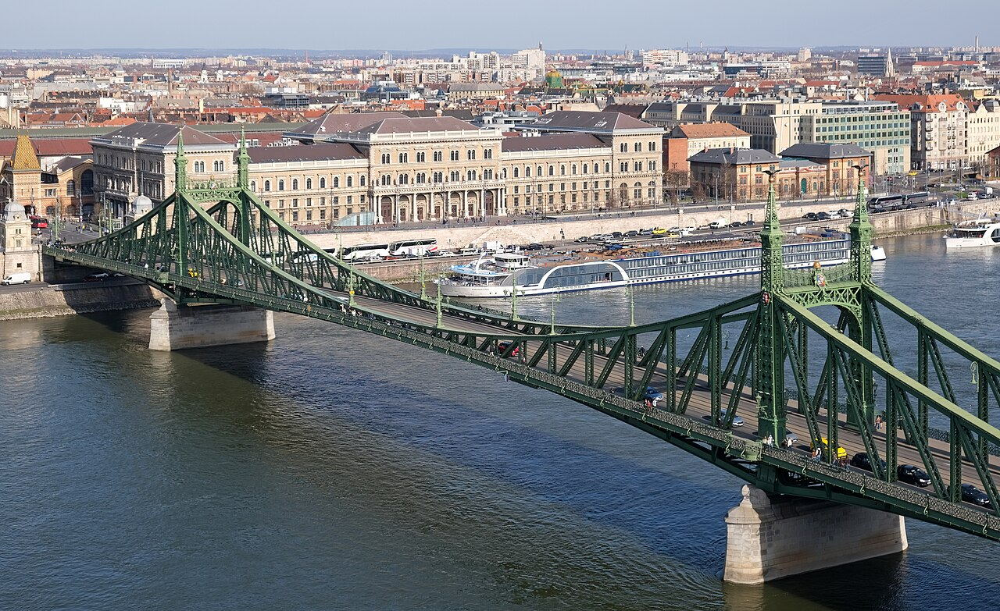
Green Art Nouveau truss bridge with a central pedestrian strip—popular at sunset and during summer festivals. The Turul bird statue tops a Buda-side pillar. Occasionally closed to traffic for public gatherings.
Opened in 1896 as Franz Joseph Bridge; renamed after 1945. Trams share the deck with walkers. Visual neighbour to the Great Market Hall and Gellért Hotel.
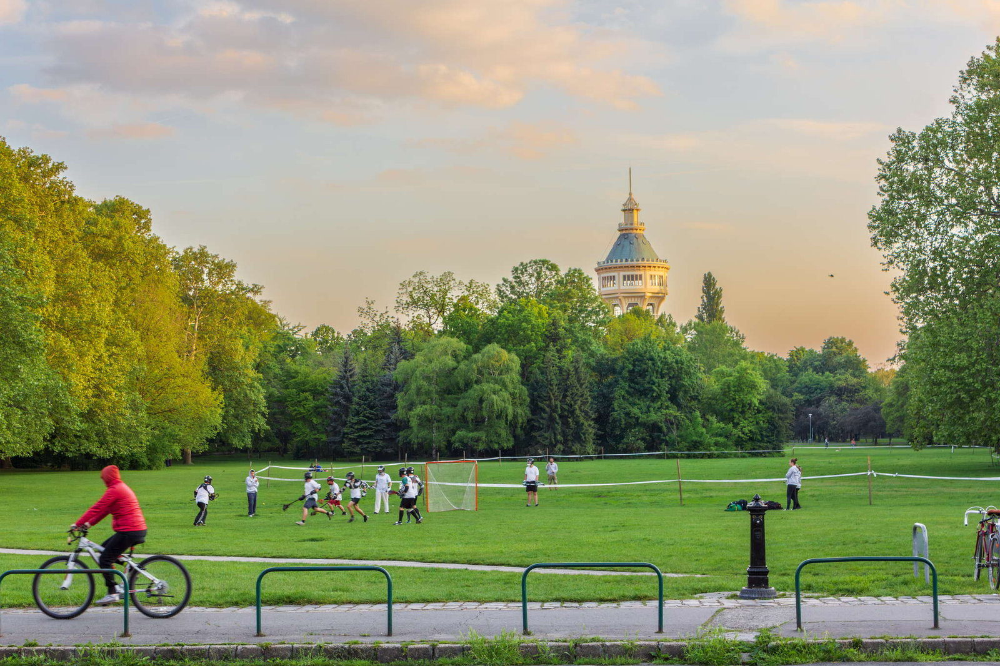
Green kilometre-long island: promenades, ruins, a small zoo, pools, and summer musical fountain shows. Rent bikes or electric carts to circle the island quickly. Medieval Dominican convent ruins remain near the centre.
Monasteries once stood here; today it is a public park with sports facilities and spas. Local lung between Buda and Pest—runners, families, and festival crowds share the paths.
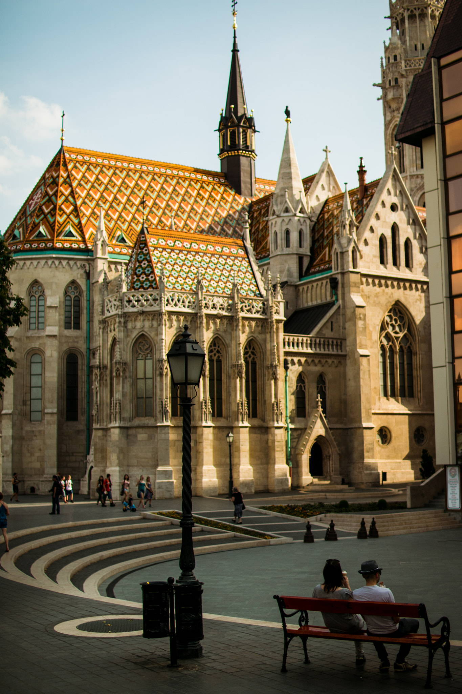
Colourful tiled roof and mixed Gothic lines: coronations and royal weddings once took place under its vaults. Franz Joseph and Elizabeth were crowned king and queen of Hungary here in 1867. Interior frescoes and the organ draw concert audiences.
Core from the 13th–15th centuries with later Baroque and 19th-century Neo-Gothic restoration by Frigyes Schulek. Buda’s main church for centuries and a visual anchor next to the Fisherman’s Bastion.
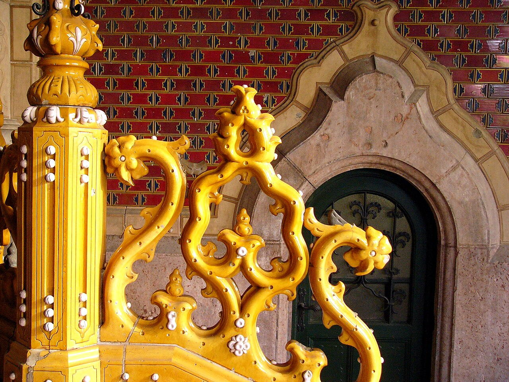
The Museum of Applied Arts is a world-class institution showcasing the finest examples of decorative and applied arts from across Europe. Established at the turn of the 20th century, it houses collections that span centuries, from medieval craftsmanship to modern design. It showcases over 40,000 objects from various periods and cultures. Its collection includes works by renowned artists such as Gustav Klimt and Alphonse Mucha. The building itself is a masterpiece of Art Nouveau architecture, featuring intricate ceramic tiles and stained glass windows. Regular temporary exhibitions highlight contemporary trends in design and crafting. Visitors can explore thematic displays dedicated to ceramics, textiles, furniture, and jewelry.
Founded in 1896 during Hungary's golden age, the museum was originally designed by Ödön Lechner, one of the leading figures of Hungarian Art Nouveau. Its distinctive neo-Gothic and Art Nouveau architecture reflects the cultural and artistic zeitgeist of fin-de-siècle Budapest. A must-visit for anyone interested in art, design, and historical craftsmanship, the Museum of Applied Arts offers a unique glimpse into the evolution of European aesthetics.
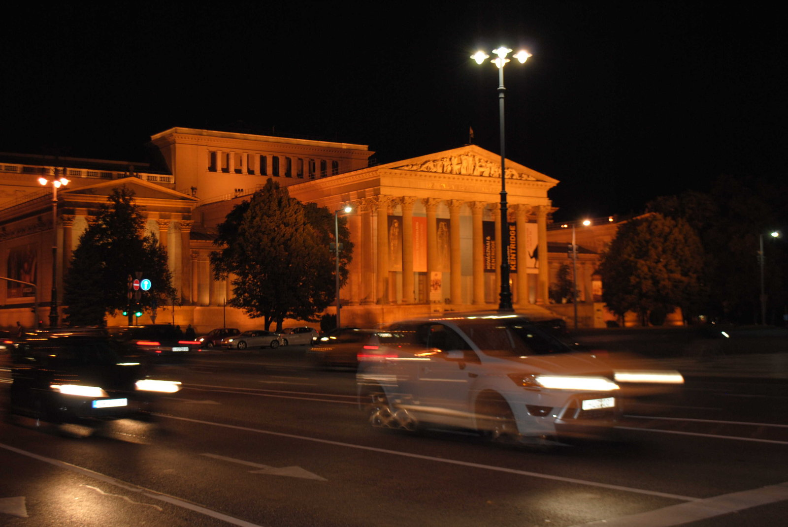
Neoclassical temple of art facing the Hall of Art—Old Masters, Egyptian antiquities, and a strong Spanish collection. Ticket often pairs with temporary blockbusters—check schedules. The building balances the square’s monument symmetrically.
Opened in 1906; long renovation cycles refreshed galleries and climate systems. Hungary’s premier encyclopaedic fine arts museum.
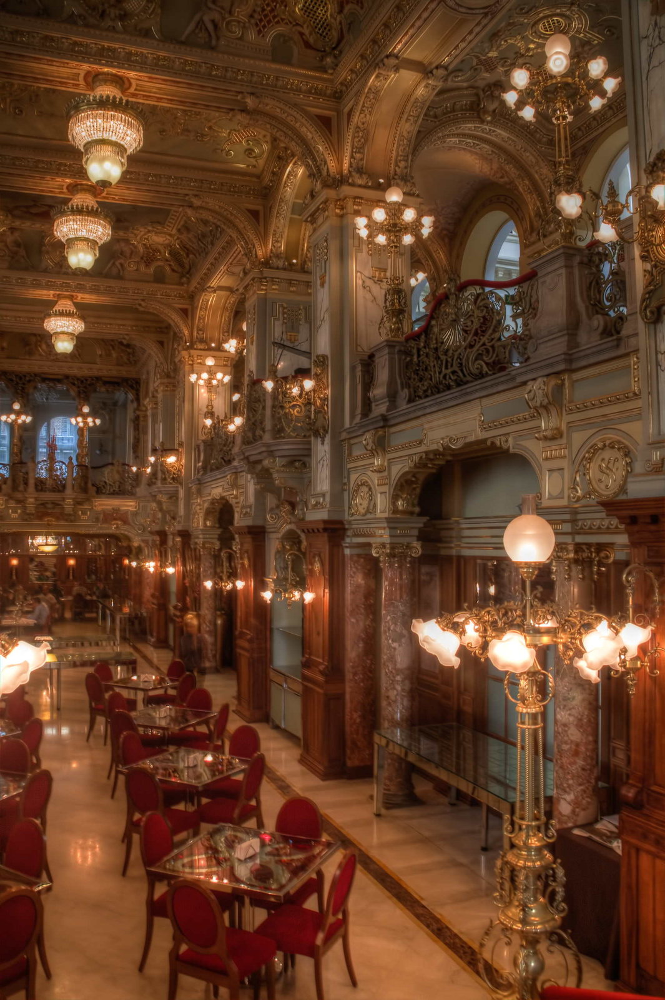
Gilded coffee palace—paintings, stucco, and chandeliers in a revived fin-de-siècle interior. Reservations help at peak hours. Live music on many evenings.
Opened in 1894; fell into decay under communism, then lavishly restored as a hotel café. Tourist-priced but unmatched for Belle Époque atmosphere.
Ottoman-era dome and octagonal pool under pencil columns, plus newer rooftop tubs with Danube views. Check the calendar for men-only, women-only, or mixed days. Combine with Gellért Bath across the river if time allows.
Turkish bath from the 16th century, expanded across centuries; gendered days still apply in some thermal areas. Direct experience of Budapest’s Turkish layer beneath the modern spa industry.
Sixty pairs of cast iron shoes recall Jews shot into the river by Arrow Cross militia in 1944–45. Visit at dusk when the Parliament lights reflect on the water. Keep a respectful distance; not a selfie backdrop.
Created by Gyula Pauer and Can Togay (2005) as a quiet riverside memorial. One of Budapest’s most moving Holocaust sites—flowers and candles appear daily.
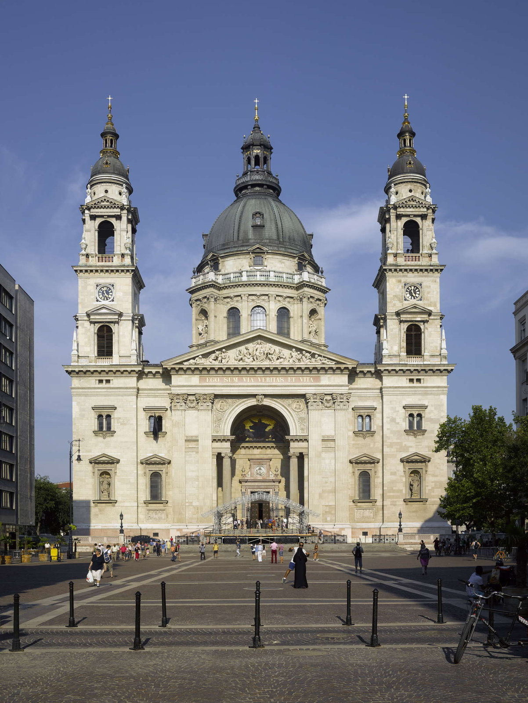
Neoclassical basilica with a climbable dome; houses the reliquary of St. Stephen, Hungary’s first king. The panorama terrace rewards the stair or lift climb. The Holy Right (hand relic) is displayed on notable feast days.
Construction spanned the 19th century after an earlier church collapse; dome completed with engineering lessons from the saga. Co-cathedral of Esztergom–Budapest and a major venue for state and liturgical events.
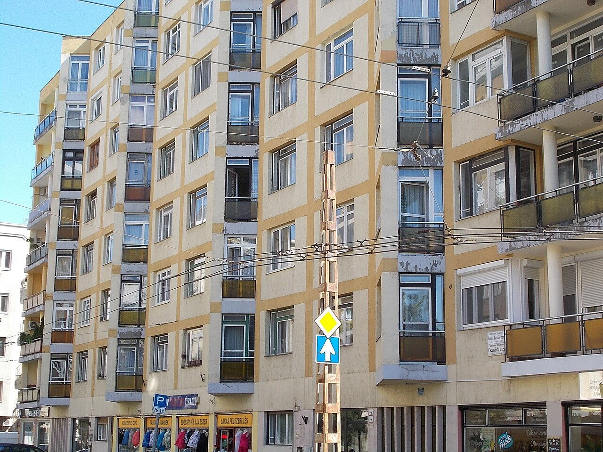
Szent István Park is a charming green oasis nestled amidst Budapest's bustling streets, offering tranquility and beauty within easy reach of the city center. The park features elegant neoclassical architecture and decorative statues. It boasts beautiful flower beds and well-maintained lawns. Szent István Park hosts various cultural events throughout the year, including concerts and festivals. Located near the Danube River, it offers stunning views of the Hungarian Parliament Building. The park is easily accessible by public transport and pedestrian paths.
Established in the late 19th century, Szent István Park was originally designed as a recreational space for the city's residents. Named after St. Stephen, Hungary's first king, it has since become one of the most beloved spots for locals and visitors alike to relax, stroll, and enjoy nature close to home. This park is significant for its historical significance and serene atmosphere, making it a must-visit for anyone exploring Budapest’s urban greenery.
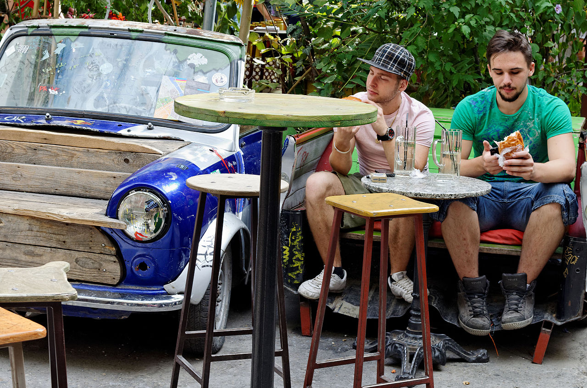
Szimpla Kert is a vibrant open-air venue nestled amidst Budapest's picturesque Buda Hills. It offers a unique blend of street food, live music, and colorful decorations that create a festive atmosphere. Established in 2004 as a converted former greenhouse and garden café. Features over 60 themed rooms with diverse décor and installations. Regularly hosts underground bands, DJs, and independent artists. Located within walking distance of the charming Castle District. Operates year-round with seasonal programming.
Originally opened as a small garden café in the early 2000s, Szimpla Kert quickly gained popularity among locals and tourists alike for its eclectic vibe and laid-back ambiance. Over time, it evolved into a multifunctional space hosting concerts, art exhibitions, and festivals. A must-visit for anyone seeking a lively and authentic experience of Budapest’s alternative culture scene.
The first permanent bridge linking Buda and Pest, with stone towers and suspension chains—still a main pedestrian and tram crossing. Lion sculptures guard the abutments at each end. Night lighting makes it one of the most photographed spans in Europe.
Opened in 1849; named after Count István Széchenyi. Rebuilt after World War II using original design principles. Urban link that literally unified the two cities long before their official merger.
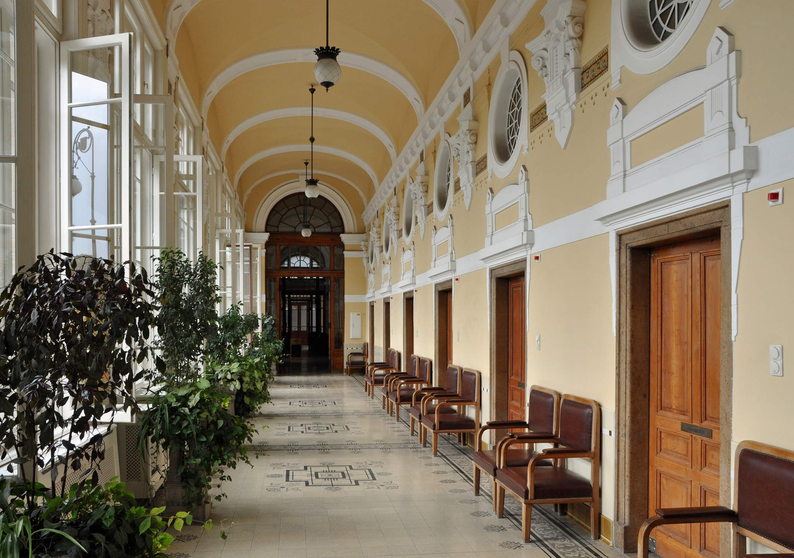
Yellow Neo-Baroque bath complex with outdoor pools steamy in winter—social Budapest at its most relaxed. Chess players at outdoor pools are a familiar winter sight. Combine with Heroes’ Square and Vajdahunyad Castle on foot.
Opened in 1913; water is supplied from the Széchenyi thermal spring system under the park. One of Europe’s largest spa complexes and a symbol of Budapest’s bath culture.
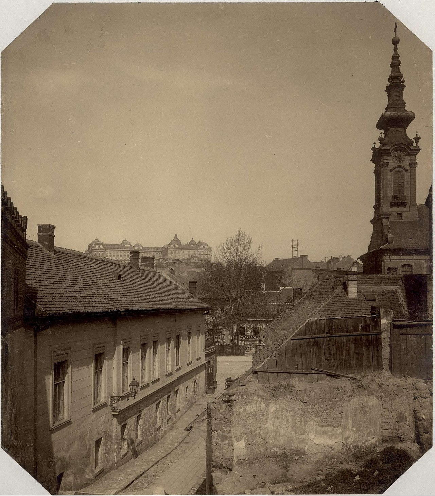
Tabán a szem utcából is a places of worship in Budapest.

The House of Houdini is a landmarks in Budapest.
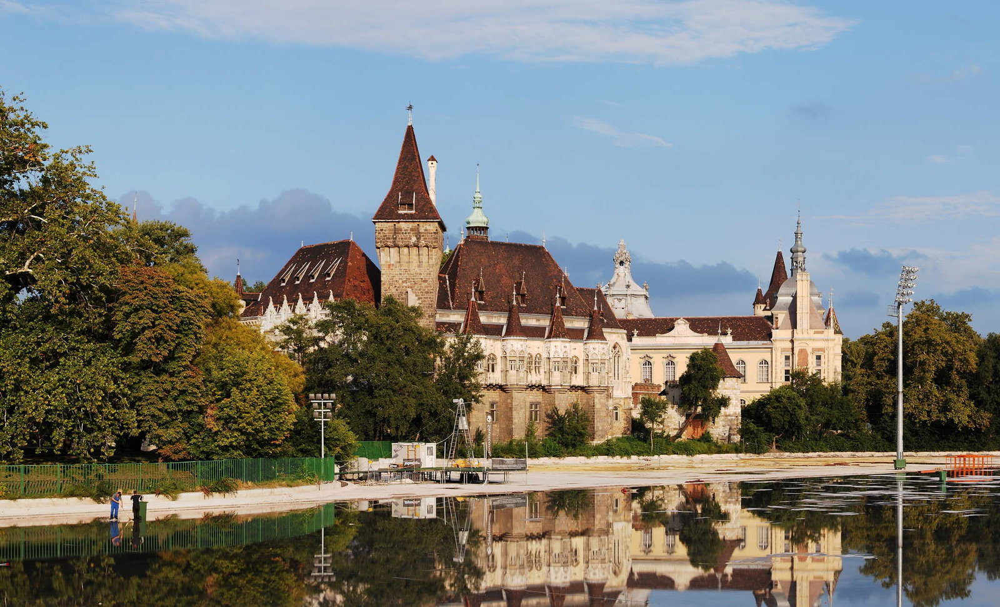
Romantic composite castle copying Transylvanian and Romanesque motifs—originally temporary for 1896, rebuilt in stone. Rowboats and ice skating (seasonal) surround the building. Courtyard concerts enliven summer evenings.
Designed by Ignác Alpár as a millennium exhibition pavilion; today it houses the Hungarian Agricultural Museum. Fairytale silhouette on the boating lake minutes from Széchenyi Bath.